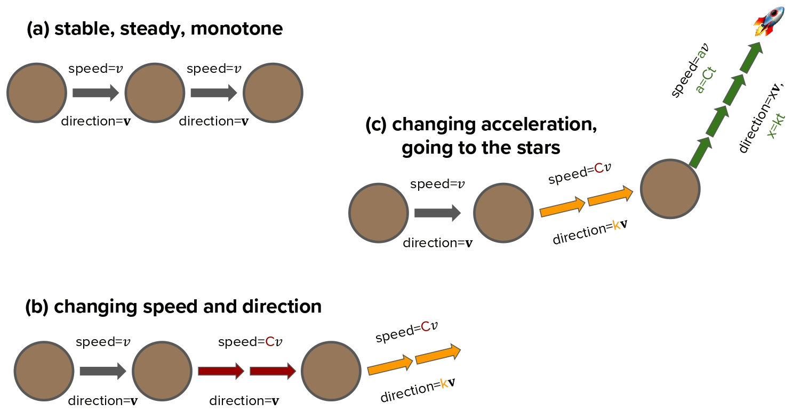

Teaching
Teaching Philosophy
My life shaped my teaching and supervision philosophy. We all start from different places and different backgrounds. It is unfair and unwise to judge people solely on the knowledge — merely facts — that they hold at a given moment. We live in a rapidly changing world. Many facts, knowledge, and skills become outdated not over 50 years, but over 5–10 years, or even within 1–2 years. People who only “know” do not get through these changes. My main teaching outcome for students is to learn how to learn.

Let me explain it with physics. One particle (a) moves at a stable speed in a stable direction
(uniform motion, a = 0). But will it be able to adapt to new goals, to a new world?
Another one (b) is not only constantly moving, but also constantly increasing its speed and
even changing direction (accelerated motion, a = C). That one is already more flexible
in this developing world. The final one does something even crazier: it is able to change
how much it changes its speed (non-linear accelerated motion, a = Ct). This is the
effect I want to achieve when working with students — to improve their ability to learn.
Be non-static, always move, improve your movement. Then you can achieve anything and move
anywhere you want in this world.
Courses
I have taught several types of courses — large lecture courses as well as practical courses and seminars.
Introduction to AI and Machine Learning — Lecture with Exercises
A lecture course organised in weekly blocks, each covering one “hot topic” in AI.
Responsible AI and Language Technologies — Seminar
A seminar series covering Responsible AI and NLP from many sides: ethics, fair data collection, technical papers on AI for Social Good, and philosophical discussions about designing technology and AI for people.
Projects in Natural Language Processing — Practical Course (BSc & MSc)
Students in groups of three carry out practical projects on part of a real research project or participate in shared tasks. Several course projects resulted in papers at top-conference workshops ([example 1], [example 2]).
Advanced NLP — Lecture Course
Lecture course on advanced topics in NLP.
Introduction to NLP — Lecture Course
Introductory topics in NLP.
Shared Tasks
I led or was part of the organising team of several multilingual shared tasks:
LLMs with Limited Resources @ WMT 2026
- Task
- Multi-task tuning of smaller LLMs for a language
- Languages
- 2
- Teams
- 5
TextDetox @ CLEF 2025
- Task
- Toxic → non-toxic style transfer
- Languages
- 15
- Teams
- 30
LLMs with Limited Resources @ WMT 2025
- Task
- Multi-task tuning of smaller LLMs for a language
- Languages
- 2
- Teams
- 2
BRIGHTER @ SemEval 2025
- Task
- Detecting basic emotions in text
- Languages
- 28
- Teams
- 150+
TextDetox @ CLEF 2024
- Task
- Toxic → non-toxic style transfer
- Languages
- 9
- Teams
- 30
Student Supervision
Since the start of my PhD, I have supervised several dozen students from around as many countries, at all levels — Guided Research, Bachelor, Master, and PhD. They have gone on to highly successful careers - PhD positions, lead developers in companies, and start-up founders - and many published their first papers with me.
| Student | Type | Title | Paper |
|---|---|---|---|
| Yermukhamed Shakhman | Bachelor thesis TUM, 2026 |
Reasoning LLMs for Hate Speech Moderation | ongoing |
| Maryna Zaspa | Bachelor thesis TUM, 2026 |
Assessing the Capabilities of Language Models in Intent Recognition Across Medical and General Domains | ongoing |
| Sibel Sansal | Bachelor thesis TUM, 2026 |
SimPatient: A Multi-Agent Framework for Realistic Patient Simulation in Clinical Training | ongoing |
| Nehir Idil Yüksel | Master thesis TUM, 2026 |
Enhancing Reliability in Hate Speech Detection using Uncertainty Quantification and Retrieval-Augmented LLMs Prompting | NLP4PI @ EMNLP2026 |
| Mariia Bogatyreva | Bachelor thesis TUM, 2026 |
An NLP Framework for Gender Bias Analysis in School Curriculum Fiction | — |
| Göksu Güz | Master thesis TUM, 2025 |
Exploration of LLM-Assisted Toxification Pipelines: Synthetic Toxic Data Generation for Toxic Speech Detection | — |
| Evgeniya Sukhodolskaya | Master thesis TUM, 2024 |
A Unified Approach to Cross-lingual News Similarity Evaluation: from Crowdsourcing to Large Language Models Optimization | KONVENS 2026 |
| Diego Miguel Lozano | Master thesis TUM, 2024 |
Explainable Textual Similarity Metrics via Equivalent and Erroneous Span Detection | LREC 2026 |
| Arda Andirin | Master thesis TUM, 2024 |
Explainable Fact-Checking in News Datasets with Large Language Models | — |
| Shaghayegh Koli | Master thesis TUM, 2024 |
Fake News and Machine-generated Text Detection for Persian and English | NLP4PI 2024 |
| Valeriia Khylenko | Master thesis TUM, 2024 |
Cross-lingual Text Classification Knowledge Transfer to the Ukrainian Language | COLING 2025, WOAH 2024 |
| Adam Rydelek | Master thesis TUM, 2023 |
Sexism in Social Media — Explainable Detection Using Deep Learning Models | SemEval 2023 |
| Daniel Schroter | Master thesis TUM, 2023 |
Discovering Human Values Behind Arguments — A Case for Transformer-based Models and Explainable AI | SemEval 2023 Winner 🏆 |
| Yen-Yu Chang | Master thesis TUM, 2023 |
Exploration of Approaches to Counter Hate Speech: The Case of Sexist Speech | LREC 2026 |
| Yuliana Poliakova | Bachelor thesis TUM, 2023 |
Detecting the Persuasion Techniques in Online News | — |
| Daniil Moskovskiy | Master thesis Skoltech, 2022 |
Supervised Text Detoxification Methods | ACL 2022 SRW |
| Mikhail Kuimov | Master thesis Skoltech, 2022 |
Multilingual and Cross-lingual Approaches to Processing of News Texts | SemEval 2022 |